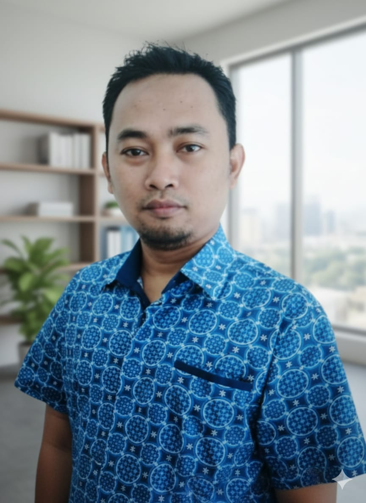
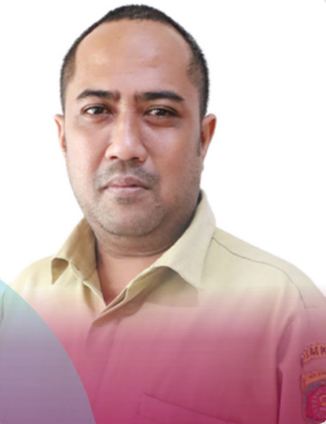
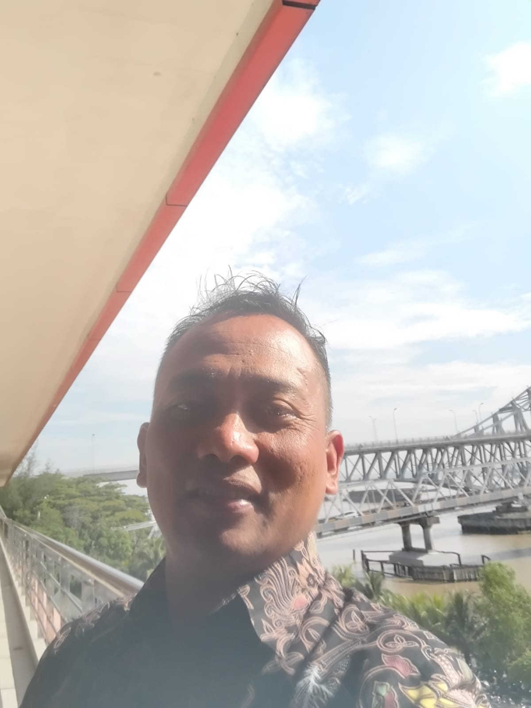
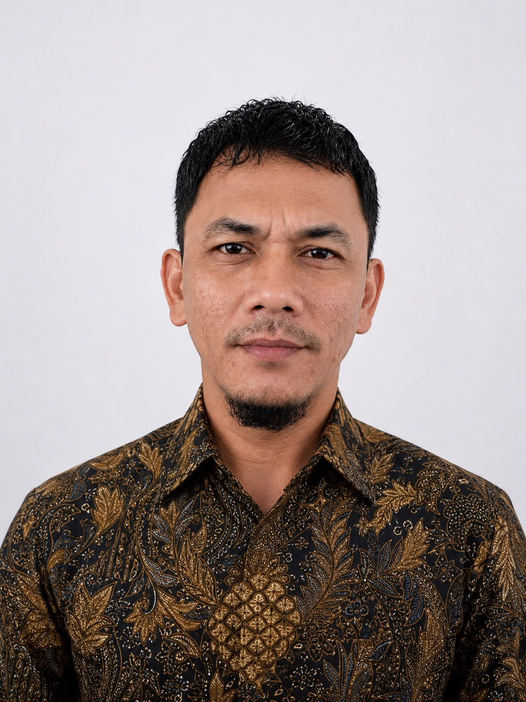
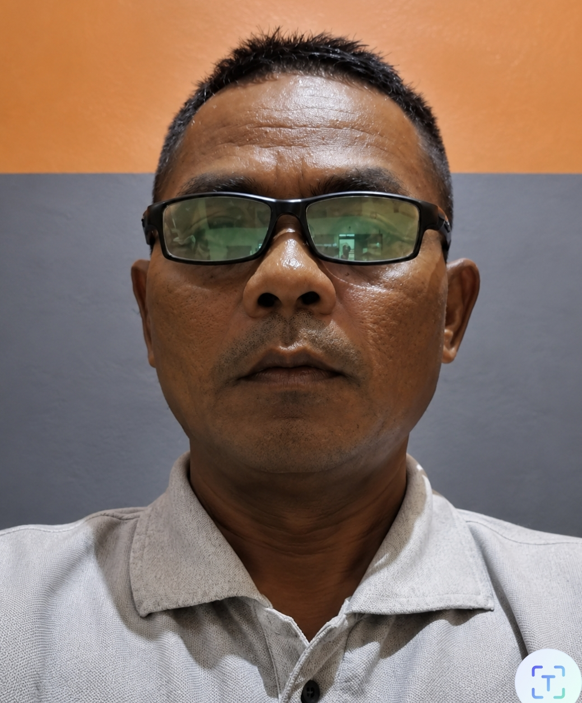
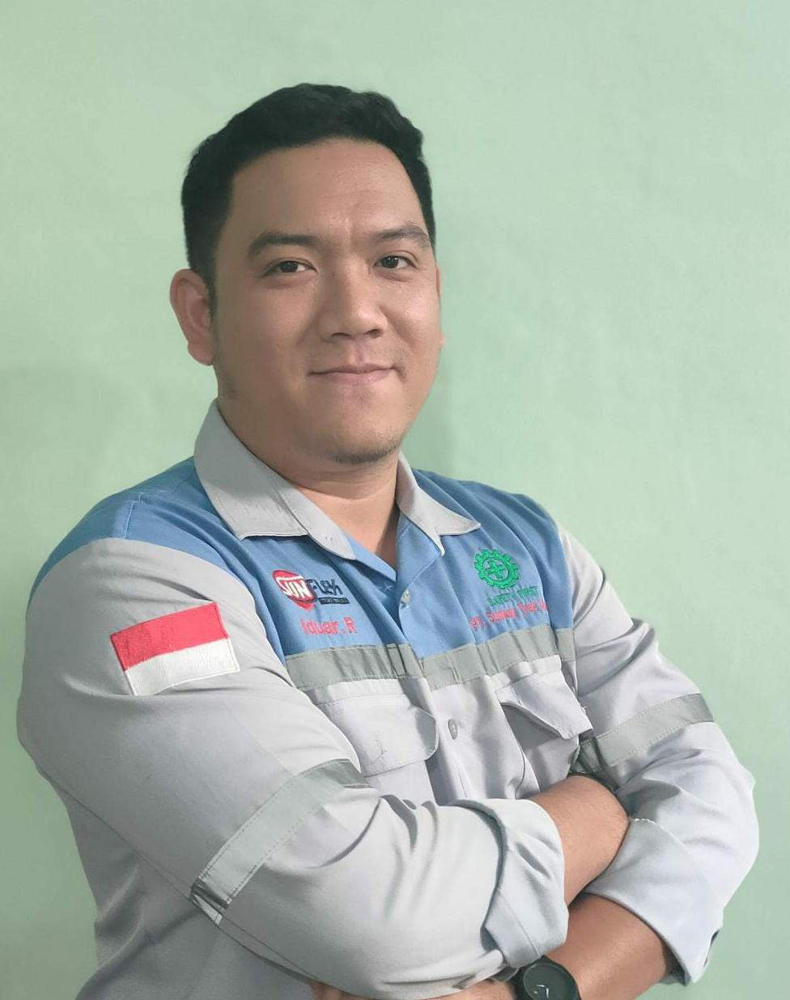

Profil & Visi Misi
Selamat datang di portal informasi resmi RT 26 Kelurahan Rapak Dalam. Website ini hadir sebagai wujud komitmen kami dalam menciptakan lingkungan yang transparan, rukun, dan bergotong royong.
Visi
Mewujudkan lingkungan RT 26 yang bersih, aman, agamis, rukun, dan sejahtera dengan sistem kepengurusan yang transparan, responsif, dan amanah.
Misi
- Menumbuhkan semangat gotong royong dan kepedulian sosial antar warga.
- Meningkatkan sistem keamanan lingkungan (Siskamling) secara swadaya.
- Mengelola keuangan RT secara terbuka, jujur, dan dapat diakses seluruh warga.
- Mendukung penuh kegiatan ibu-ibu PKK dan optimalisasi Posyandu untuk kesejahteraan keluarga.
Data Susunan Pengurus
Pengurus Inti & Seksi-Seksi RT 26

Bpk. Eko Mujianto
Ketua RT

Bpk. Dody Novanto
Sekretaris

Bpk. Iwan Priyanto
Bendahara
Bpk. Muhammad Rohman
Seksi Keamanan

Bpk. Fajar Aswandi
Seksi Kebersihan
Bpk. Suyono Achmad Fatoni
Seksi Kesejahteraan & Keagamaan

Bpk. Supardi
Seksi Pembangunan

Bpk. Iduar Rahman
Seksi Ekonomi & Usaha
Pengurus PKK & Kader Posyandu

Ibu [Nama Ketua PKK]
Ketua PKK

Ibu [Nama Ketua]
Ketua Kader Posyandu
Anggota / Kader Posyandu (Lengkap)
- Ketua Kader Posyandu: Ibu [Nama Ketua]
- Kader Meja 1 (Pendaftaran): Ibu [Nama Kader]
- Kader Meja 2 (Penimbangan): Ibu [Nama Kader]
- Kader Meja 3 (Pencatatan): Ibu [Nama Kader]
- Kader Meja 4 (Penyuluhan): Ibu [Nama Kader]
Sumber & Transparansi Keuangan
Dana iuran dialokasikan sepenuhnya untuk:
- Pemeliharaan fasilitas umum Penerangan Jalan.
Laporan Kas Bulan Ini
| Tanggal | Keterangan Transaksi | Pemasukan (Rp) | Pengeluaran (Rp) | Saldo Akhir (Rp) |
|---|---|---|---|---|
| 01-Juni-2026 | Saldo awal bulan | 0 | - | 0 |
| 01-Juli-2026 | Kumpulan iuran warga (50 KK) | 2.500.000 | - | 5.000.000 |
| 10-Sep-2026 | Pembelian Lampu | - | 1.000.000 | 4.000.000 |
*Laporan ini diperbarui setiap akhir bulan. Warga berhak meminta rincian nota kepada Bendahara.
Kegiatan Lingkungan
- Kerja Bakti Rutin (Jumat Bersih): Dilaksanakan pada minggu pertama setiap awal bulan. Fokus pada pembersihan parit/selokan dan pemotongan rumput fasilitas umum.
- Pelayanan Posyandu: Dilaksanakan rutin setiap tanggal 15 bertempat di Posko RT 26. Melayani penimbangan balita, pemberian vitamin, dan pemeriksaan kesehatan dasar lansia.
- Siskamling / Ronda Malam: Jadwal piket bergilir setiap malam mulai pukul 23:00 hingga 04:00 WITA untuk menjaga keamanan lingkungan.
- Arisan & Pertemuan PKK: Dilaksanakan pada minggu kedua setiap bulan sebagai wadah silaturahmi dan pemberdayaan perempuan di lingkungan RT 26.